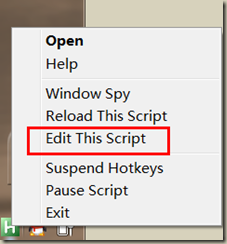

高效办公辅助工具Autohotkey
序：工欲善其事，必先利其器。近期工作中要对公司的AFP软件进行汉化，由此也带来了大量的重复性工作，海量的字符串提取，组合，规整，键盘鼠标表示压力颇大~ 为此特别找回了大学玩魔兽对战用的改键插件Autohotkey，嘿嘿。
AutoHotKey 软件可以实现很多有趣的功能，可以简化你的重复性工作。这里下载
选择一个适合你的版本，办公环境稳定的可以选择安装版，需要便携要求的可以下载绿色版本，当然安装版的好处是：系统会自动关联 .ahk 文件。安装完成后打开Autohotkey软件，然后你会在系统托盘处看到一个H字样的小图标。现在右击托盘处图标，选择Edit this Script来设置。
{kind=link}
在打开的配置文件中加入你需要的功能。例如：加入
#w::Run wangheng.org
然后选择Reload This Script，现在按win键(小旗标识那个键)+w，怎么样是不是直接在浏览器打开本博的主页呢？
这里简单地解释一下那两行语句的意思：#号代表 Win 键；两个英文冒号作为热键和命令的分隔符使用；run是Autohotkey中常用的命令之一，它的后面是要运行的程序完整路径或网址（思考：如果要按win+q就打开QQ，该怎么写呢？）。当然如果你的程序或命令的所在目录是加到了系统的PATH中，则可以直接写执行程序的名字。例如
#n::run notepad
代码中只是写着“notepad”，没有写上完整路径但是却能打开，明白为什么了吧。（Tips：Autohotkey 能替换掉系统的默认快捷键）
Ctrl 的符号是 ^
Alt 的符号是 !
Shift 的符号是 +
如果你想按下Ctrl + Alt + Shift + N来启动 notepad的话，可以这样写：
^!+n::run notepad
所以一法通，万法通，现在你可以完全定制自己的热键了。
如果只是上面的这些技巧那么这篇博客就没有什么必要了，下面要介绍的是我如果利用visual studio中的Vim插件和Autohotkey来完成一些很费事的工作的。
由于经常拼接类似这样的语句
public const String A="A";
每个源码文件中都可能有数十个这样的字符串，所以带来的工作量可想而知！~我是这样写的，首先将A字符串复制到剪切板。
!d::send {esc}{o}public const String {esc}{p}{A}{=}{"}{esc}{p}{A}{"}{;}
哈哈，现在随便在哪一行按alt+d，是不是直接在下一行打出了public const String A="A";这条语句呢？如果你的机器没有安装vim或者vim插件还可以这样写：（不过需要先手动换行，代码倒是少一些）
!d::send public const String ^{v}="^{v}";
很多浏览器或编辑工具都支持按Ctrl+Tab来切换标签，但总感觉Ctrl不如Alt好按，所以加了一条
!a::send ^{tab}
平时好多地方登录都要输入邮箱，所以加了这样一行：
!u::send me@wangheng.org
这样平时也能节省自己不少时间~分秒必争嘛~
 微信
微信 支付宝
支付宝